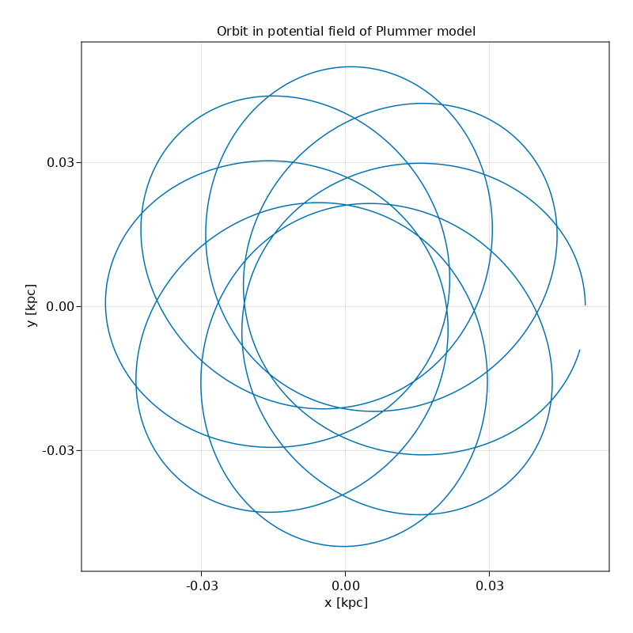

02 Autodiff on background potential field
In this example, we drive a Zygote-derived gradient through the bgforce hook of Simulation. Provided Zygote.jl is loaded before AstroNbodySim.jl, every bgforce::Function is treated as potentially differentiable, which means the library will dispatch through ChainRulesCore to compute the adjoint of the dynamics.
using PhysicalParticles, UnitfulAstro
using AstroNbodySim
using CSV, DataFrames
using GLMakie
using Zygote
astro()
mkpathIfNotExist("output")
p1x(sim::Simulation) = find_particle(sim, 1).Pos.x
p1y(sim::Simulation) = find_particle(sim, 1).Pos.y
analysers = Dict(
"x" => p1x,
"y" => p1y,
)
G = Constant(uAstro).G
# Define the potential field of Plummer model
M = 1.0e6u"Msun"
b = 0.01u"kpc"
phi(p::PVector) = -(G*M)/sqrt(p*p+b*b)
# Autodiff by Zygote
acc(p::PVector) = -1.0*PVector(gradient(phi, p)[1]...)
acc(p::AbstractParticle) = acc(p.Pos)
bgforce = Function[acc]
R = 0.05u"kpc"
vel = sqrt(G*M/R)
T = 2*pi*sqrt(R^3 / G / M)
TimeEnd = 4.5*T
data = StructArray([Star(uAstro, id = 1)])
data.Pos[1] = PVector( R, 0.0u"kpc", 0.0u"kpc")
data.Vel[1] = PVector(0.0u"kpc/Gyr", 0.7*vel, 0.0u"kpc/Gyr")
sim = Simulation(deepcopy(data);
pids = [1],
bgforce,
analysers,
TimeEnd,
TimeBetweenSnapshots = TimeEnd,
OutputDir = "AutodiffBackground"
)
run(sim)
# Plot
title = "Orbit in potential field of Plummer model"
df = DataFrame(CSV.File(joinpath(sim.config.output.dir, "analysis.csv")))
fig = Figure(resolution = (800,800))
axis = GLMakie.Axis(fig[1,1]; title, xlabel = "x [kpc]", ylabel = "y [kpc]")
axis.autolimitaspect = 1
Makie.lines!(axis, df.x, df.y)
Makie.save(joinpath("output/AutodiffBackground.png"), fig)